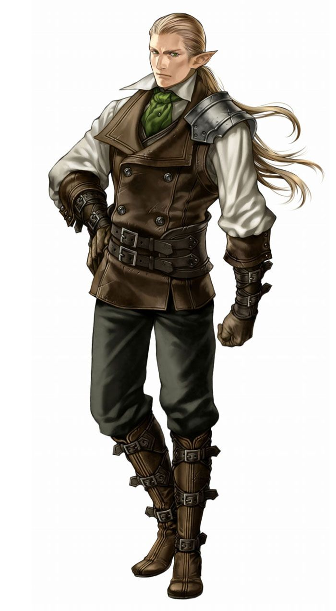

Эльф (Elf)
Описание
Эльфы обычно выше людей, но обладают более хрупким и изящным сложением и длинными заостренными ушами. У эльфов большие миндалевидные глаза с крупными, ярко окрашенными радужками. Хотя в эльфийских нарядах обычно отражается красота природы, эльфы, живущие в городах, одеваются по последней моде.
Общество
Многие эльфы чувствуют свою связь с природой и стремятся жить с ней в гармонии. Большинство, впрочем, считает работу с землей и камнем вульгарной и предпочитает ей изящные искусства, а врожденное терпение помогает им в занятиях волшебством.
Отношения с другими расами
Эльфы склонны считать остальные народы слишком торопливыми и импульсивными, а потому не воспринимают их всерьез, но при этом хорошо разбираются в чужих душах. Эльфу может не нравиться сосед-дварф, но он первым признает кузнечное мастерство этого дварфа. Эльфы считают гномов странными (а порой и опасными) чудаками, а к полуросликам относятся с некоторой жалостью, так как, на эльфийский взгляд, эти малыши живут бродягами, не имея родных земель. Люди эльфов просто очаровывают, что подтверждается большим числом полуэльфов, хотя эльфы обычно не признают таких потомков. К полуоркам эльфы относятся с недоверием и подозрением.
Мировоззрение и религия
Эльфы - существа переменчивые и эмоциональные, но ценящие добро и красоту. Мировоззрение большинства эльфов хаотичное доброе. Они отдают предпочтение богам, разделяющим их интерес к мистическим свойствам мира, особенно Дезне и Нефису. Первой - за ее чудеса и любовь к диким местам, а второму - за его мастерство в магии. Калистрия - самое известное божество эльфийского пантеона, но слава ее скандальна, так как она представляет собой воплощение эльфийских идеалов, доведенных до крайности.
Искатели приключений
Многие эльфы отправляются в странствия из желания повидать окружающий мир. Они покидают свои уединенные лесные поселения, чтобы вернуть утраченную магию своего народа или найти затерянные в веках царства, основанные их пращурами тысячелетия назад. Эльфов, выросших среди людей, зачастую привлекает жизнь авантюриста - свободная и непредсказуемая. Из-за своей хрупкости эльфы стараются избегать ближнего боя и предпочитают классы, работающие на дистанции, вроде волшебника или следопыта.
Расовые особенности
+2 Ловкость, +2 Интеллект, -2 Выносливость. Эльфы обладают гибким телом и мышлением, но хрупким сложением.
Средний размер. Эльфы - существа среднего размера, что не дает им никаких бонусов или штрафов.
Нормальная скорость. Базовая скорость эльфов - 30 футов.
Сумеречное зрение. Эльфы видят в сумерках вдвое дальше людей.
Эльфийский иммунитет. Эльфы невосприимчивы к магическому сну и получают +2 (народ) к испытаниям против заклинаний и эффектов школы очарования.
Эльфийская магия. Эльфы получают +2 (народ) к проверкам преодоления УкМ. Кроме того, эльфы получают +2 (народ) к проверкам Колдовства для определения свойств волшебных вещей.
Острые чувства. Эльфы получают +2 (народ) к проверкам Внимания.
Оружие эльфов. Все эльфы умеют пользоваться длинными и короткими луками (включая композитные), длинными мечами и рапирами; любое оружие со словом «эльфийский» в наименовании относится к категории особого оружия для представителей этого народа.
Языки. Эльфы начинают игру со знанием эльфийского и всеобщего языков. Эльфы с высоким значением Интеллекта могут выбрать дополнительные языки из следующего списка: гнолльский, гномий, гоблинский, драконий, небесный, орочий, сильван.
Назад к списку народов